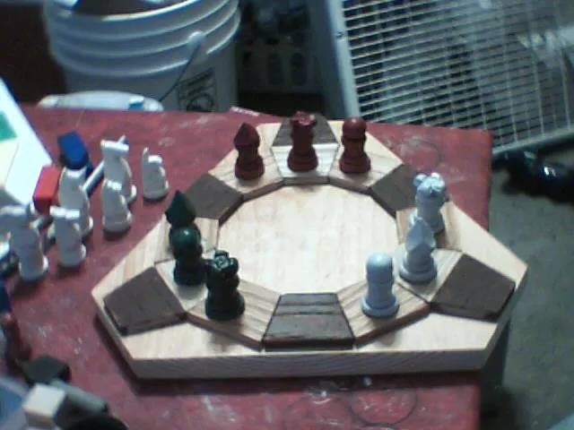
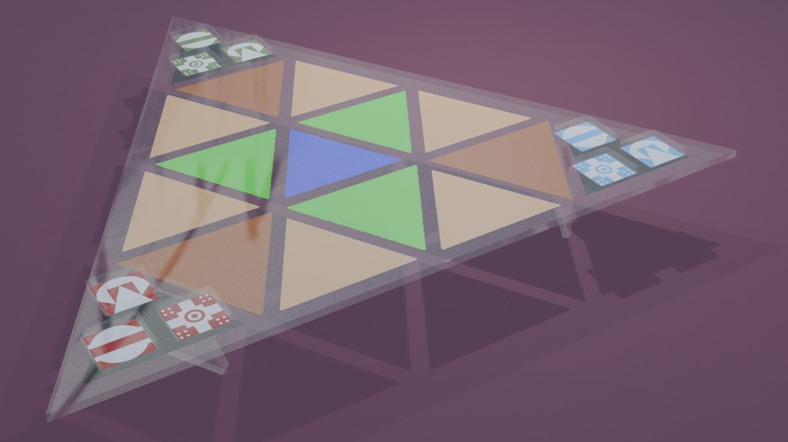
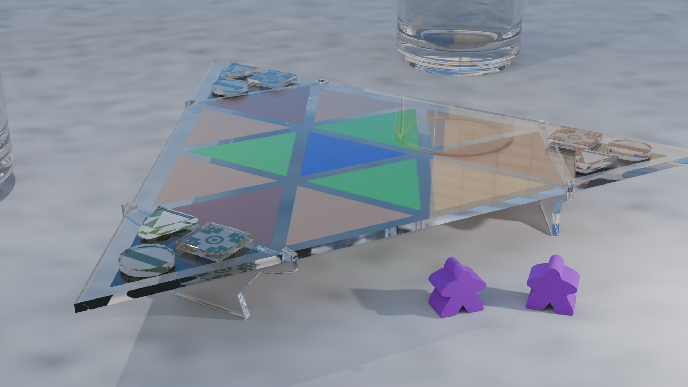
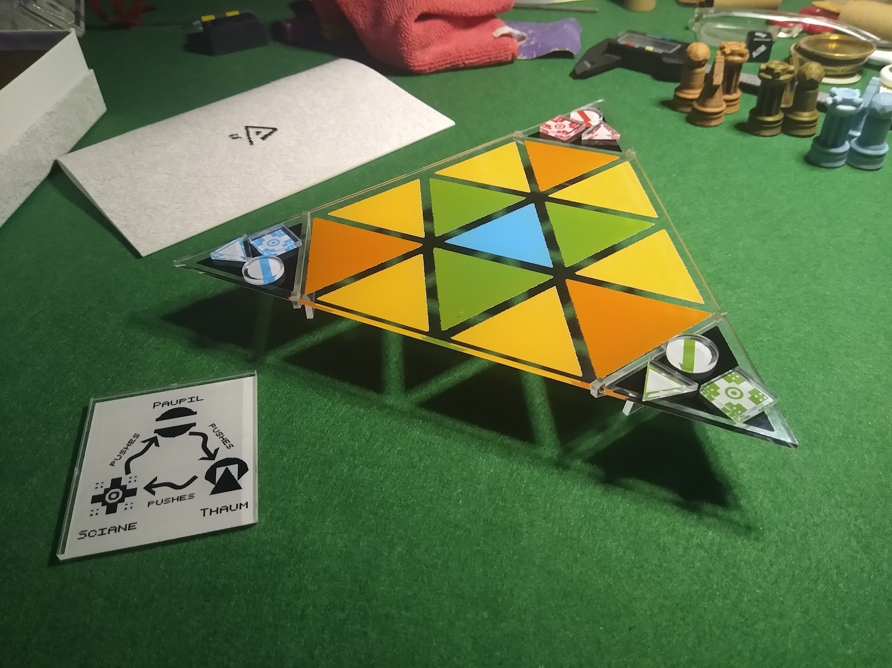

Taasen
An abstract strategy game from another universe.
Jennifer Diane Reitz invented Taasen as part of the cultural fabric of Tryslmaistan, the alien cosmos where her webcomic Unicorn Jelly takes place. Tryslmaistan has different physics than our universe, different societies, different traditions. Taasen is a game the people there play.
You can read Jennifer's guide to Taasen here.
Original Set
I originally found Taasen as a teenager while reading the Future Games section on the Atomic Rockets site. For whatever reason the idea of the three-way fight controlled by two players really stuck with me, and I made a wooden board and sculpey pieces.
I don't know what happened those original pieces, but I still have the board. Much later on, when we got our first 3d printer, I designed and made pieces for it. I actually sell these pieces too.
Game Crafter Edition
Game Crafter added a way to lasercut custom parts, and I felt like an acrylic board would look cool. I first mocked it up in Blender, including thinking about how the pieces could look.
At first the idea was actually to use printed d4s for the pieces, with a rules hint hidden on the bottoms. The icons are drawn in Playscii.
However, each die costed like $4 which felt like too much, and there was a lot of waste space on the acrylic sheet, which pieces could be cut from.
I first tried making them all the same shape, but decided that different shapes looked better. And there was still enough leftover space in the acrylic to include blank spares, and a "card" for rules quick reference.
The Final Product
Ordered the prototype and this is how it came out!
Most of the work was drawing the cutting pattern and making the box art and store page assets.
This is available for sale from The Game Crafter, with Jennifer's permission.